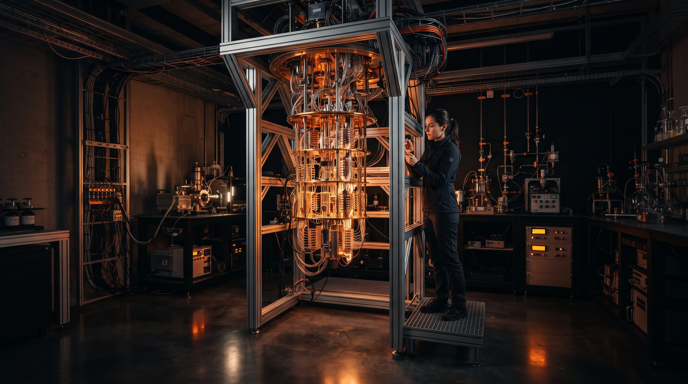
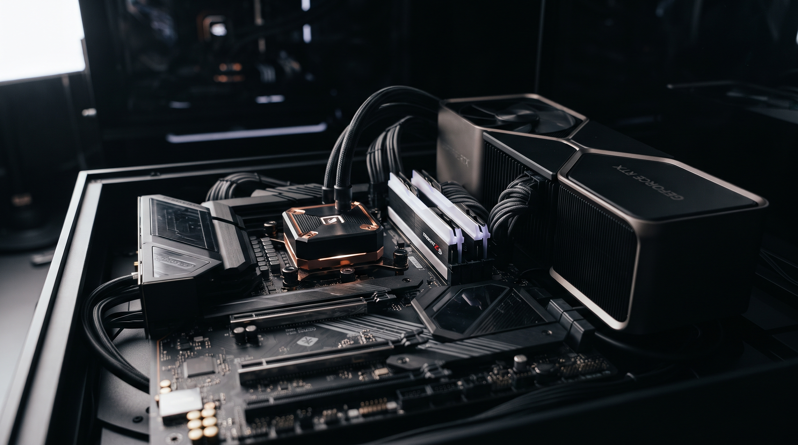

IA
GPT-5: El salto cuántico en IA
Análisis del nuevo modelo de OpenAI y su impacto en la productividad global.
Navega por nuestra biblioteca de artículos organizados por tema, fecha y relevancia.
Análisis del nuevo modelo de OpenAI y su impacto en la productividad global.
Comparativa completa de los dos smartphones más potentes del mercado.
Guía para implementar seguridad Zero Trust en tu organización.
¿Cuál lenguaje elegir para tu próximo proyecto backend? Análisis técnico.
Especificaciones, precio estimado y títulos de lanzamiento filtrados.
Comparativa de salud, sensores y autonomía de los smartwatches top.

TendenciasCómo la tecnología cuántica está llegando a aplicaciones comerciales reales.

Smart HomeLos mejores dispositivos para automatizar tu hogar este año.
¿Dónde estamos realmente con la conducción autónoma? Datos y perspectivas.
Apple Vision Pro 2 vs Meta Quest 4: la nueva generación de MR.
Herramientas y estrategias para identificar y protegerte de deepfakes.
Cómo los equipos están usando IA para multiplicar su productividad.
Todo lo que necesitas saber sobre la autenticación sin contraseñas.
Por qué el procesamiento en el borde está reemplazando al cloud centralizado.
Los mejores cascos con cancelación de ruido activa para cada presupuesto.
No se encontraron artículos relacionados.